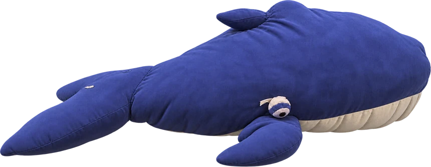

ДК им. Л. Плешкова, Малый зал
Геленджикский проспект, 95. Субботние показы в 10:30 и вечерние спектакли, касса с бумажными билетами.
Маленький театрик кукол — театр Владимира Злобина в Геленджике. У нас нет своего здания: ширму, свет, кукол и инструменты мы привозим туда, где нас ждут, — в Малый зал ДК, на детскую площадку, в школу или сад.

Мы играем в Малом зале ДК им. Плешкова, на детской площадке «Город сказок», в школах и садах Геленджика. Привозим ширму, свет, кукол и инструменты — и собираем театр там, где нас ждут.
Спектакль идёт не за четвёртой стеной: актёры спускаются с куклами в зал, и дети успевают их потрогать прямо по ходу истории. Музыку играем вживую, инструменты стоят на сцене, микрофонов нет — дети не пугаются громкого звука.
Перед началом проходит творческая пятиминутка: желающие дети выходят со стихами и песнями. После спектакля куклы остаются на сцене — можно подойти, рассмотреть их вблизи, потрогать и сфотографироваться. Бесплатно.


Мы играем на расстоянии вытянутой руки от первого ряда: куклу видно целиком, а актёра — вместе с ней.
 Зрители от года — с родителями
Зрители от года — с родителями
 Фото с куклами — 0 ₽
Фото с куклами — 0 ₽

Театр собирается за час до спектакля и разбирается после поклона.
Геленджикский проспект, 95. Субботние показы в 10:30 и вечерние спектакли, касса с бумажными билетами.
Открытая детская площадка. Играем в курортный сезон, в том числе бесплатные показы на открытии сезона.
Выездные показы по всему городу: от вас помещение, от нас — ширма, свет, куклы и музыка. Договориться можно со Светланой по телефону.
Весь театр — это четыре человека. Каждая ведёт по три-четыре куклы за спектакль и играет на инструментах вживую.
В детский сад, школу, на праздник двора. Отдельный зал не нужен — хватит просторной комнаты.
Светлана: +7 912 337-41-97. Скажите возраст детей и сколько их будет — подберём спектакль, который досмотрят до конца.
Утренние показы обычно для садов, дневные и вечерние — для школ и семей.
Ширма, свет, куклы, инструменты и реквизит — всё наше. От вас только помещение.
После поклона куклы остаются на сцене: дети подходят, трогают и фотографируются.
С года. Спектакли идут 35–40 минут без антракта (вечерние «Журавлиные перья» — 55), играем без микрофона и близко к залу, поэтому малыши не пугаются и обычно досматривают до конца.
Билет покупается и на взрослого, и на ребёнка от года. Детям до года — бесплатно, на руках у родителей.
800 ₽ на субботние спектакли, 1000 ₽ на вечерние «Журавлиные перья». Билет нужен и взрослому, и ребёнку от года. Купить можно на kassy.ru или в кассе ДК.
Основная площадка — Малый зал ДК им. Л. Плешкова, Геленджикский проспект, 95: субботние показы в 10:30. Летом играем на детской площадке «Город сказок» и на фестивалях, в течение года — в школах и детских садах города.
Да. Привозим ширму, свет, кукол и инструменты — от вас нужно только помещение. Обсудить спектакль и договориться о приезде можно со Светланой: +7 912 337-41-97.
Живая. Инструменты стоят прямо на сцене, играют те же актёры, что ведут кукол. Фонограммы у нас нет.
Куклы остаются на сцене. Можно подойти, рассмотреть их вблизи, потрогать и сфотографироваться — бесплатно.
ДК им. Л. Плешкова, Малый зал
Геленджикский проспект, 95
субботние показы в 10:30
Площадка «Город сказок»
Школы и детские сады